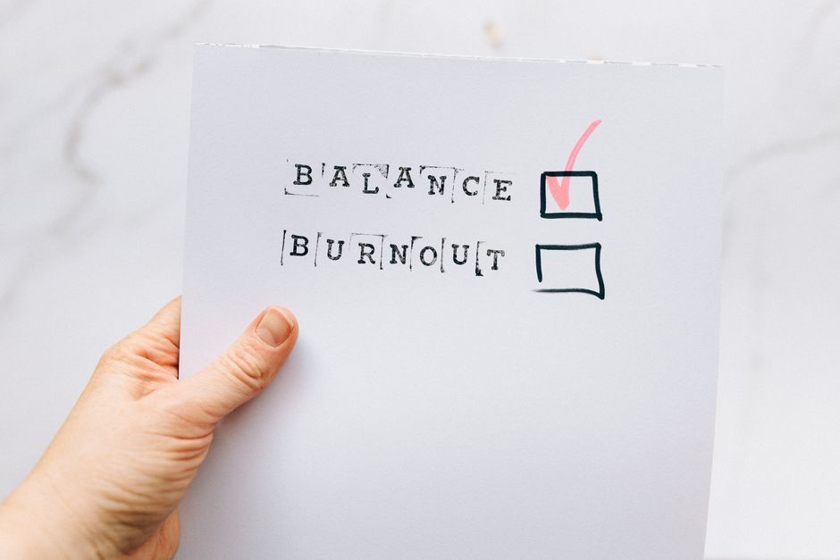

Emotional Wellbeing
Why Can't I Make Decisions Anymore? Decision Fatigue
If you cannot make decisions anymore, you are probably not losing your edge. You may be running on decision fatigue: the drop in mental energy that comes from making choice after choice without enough rest in between. When stress is already high, even small decisions start to feel heavy, because your capacity to choose has quietly shrunk.
What is decision fatigue?
Decision fatigue describes the very real drop in mental energy that can follow a long run of decisions, especially under stress or without enough rest. It is a well-described pattern in psychology, not a diagnosis.

It shows up in ordinary ways. Choosing dinner feels as hard as choosing a career move. You stand in front of a full closet with nothing to wear. You reread the same email four times and still cannot hit send.
Here is the part I want you to hear: the decisions have not gotten harder. Your reserve for making them has gotten smaller. That is not a flaw in your character. It is a messenger, and it is worth listening to.
Why does every small choice feel so heavy?
Every decision draws on the same pool of attention and energy, whether it is "what should we eat" or "should I take this job." When that pool is already being spent on ongoing stress, there is simply less left for ordinary choosing.
A body that has been bracing for a long time keeps a little of its attention on guard. Sleep has been thin. The to-do list never ends. Someone always needs something. By late afternoon, the part of you that weighs options and commits has very little fuel, so even a low-stakes choice can tip you into overwhelm.
This is a little different from chronic second-guessing, which is more about trusting your own judgement. If that sounds closer to home, my post on why you second-guess every decision walks through it.
What are the signs of decision fatigue?
You may be running on decision fatigue if:
- Small choices feel strangely exhausting
- You default to the easiest option rather than the one you actually want
- You put off decisions until someone else makes them for you
- You feel irritable or shut down by late afternoon
- Choices you used to make quickly now take much longer
- You say "I don't care, you pick" more than you mean to
Notice when it happens. If the fog thickens on days that are already full, or during a long season of stress, that timing is often the clearest clue. Putting decisions off can also look a lot like procrastination, and the two often travel together; why we procrastinate when starting feels unsafe explores that freeze side of the pattern.
Is decision fatigue the same as mental exhaustion?
They overlap, but they are not identical. Decision fatigue is a narrower thing: a drop in your ability to weigh and commit after many choices. Mental exhaustion is a broader, heavier tiredness that can make everything feel hard, not only decisions.
If the fatigue lingers even after rest, or reaches well beyond choosing, why you feel so mentally exhausted all the time may be the better place to start.
How can I protect my decision-making energy?
The goal is not to do less of your life. It is to spend your limited choosing energy on what actually matters to you. A few gentle places to begin:
- Make fewer decisions. Plan meals for the week, lay out tomorrow's clothes tonight, or keep a short list of default choices for things that do not need fresh thought every time.
- Decide early. Put important choices in the morning, when your reserve is fuller, rather than at the end of a long day.
- Shrink the choice. Two good options are easier on the body than ten.
- Let good enough be enough. Not every decision has to be the perfect one. Most are reversible.
- Protect your rest. A rested, settled nervous system simply has more to give. Sleep, slow breathing, and a few minutes outside all count.
If you would like a calm, structured way to work on this with support, you can look through my programs and packages to see what working together could look like.
When should I talk to my doctor?
Please talk with your physician if trouble concentrating, exhaustion, or an inability to make decisions is persistent, getting worse, or affecting your work and relationships. Ongoing fatigue and poor focus can have many underlying causes, including sleep problems, thyroid changes, low iron, depression, and anxiety, and they deserve a proper medical evaluation. The American Psychological Association also has clear, reputable background on how stress affects the mind and body.
If you ever have thoughts of harming yourself, call or text 988 to reach the Suicide and Crisis Lifeline.
Pause for Reflection
Take a slow breath in, and a longer breath out.
Ask gently: Which decisions have I been carrying that do not actually need to be mine? What is one choice I could make once, and stop remaking every day?
"Trust in the Lord with all thine heart; and lean not unto thine own understanding" (Proverbs 3:5). You were never meant to carry every choice on your own strength. Some of that weight is allowed to rest somewhere else.
FAQ
Is decision fatigue a real medical condition?
It is a well-described psychological pattern rather than a diagnosis on its own. Persistent fatigue and trouble concentrating are still worth bringing to your doctor, since they can have several underlying causes.
Does decision fatigue only affect big decisions?
No. It often shows up most clearly in small, everyday choices, because those are the ones you make most often without noticing the effort involved.
Can rest alone fix decision fatigue?
Rest helps a great deal, and it works best alongside making fewer unnecessary decisions and easing the ongoing stress that is draining your reserve in the first place.
Where can I get support?
If decision fatigue has become part of a bigger pattern of overwhelm, my emotional overwhelm and nervous system support work may help, or you can send me a note through the contact page. We can look at what is underneath it together.
This article is for educational purposes and is not medical advice. It is not intended to diagnose, treat, cure, or prevent any disease. Please work with a qualified practitioner, and consult your physician before making changes to your health routine.
In Renewal,
Lynette Wing
Founder of Renewal Health
Clinical Homeopath, Naturopath, Mind-Body Practitioner
Dedicated to root-cause healing and whole-person alignment. Guiding clients to emerge, align, and live fully, restoring vitality, clarity, and sustainable wellness. About Lynette